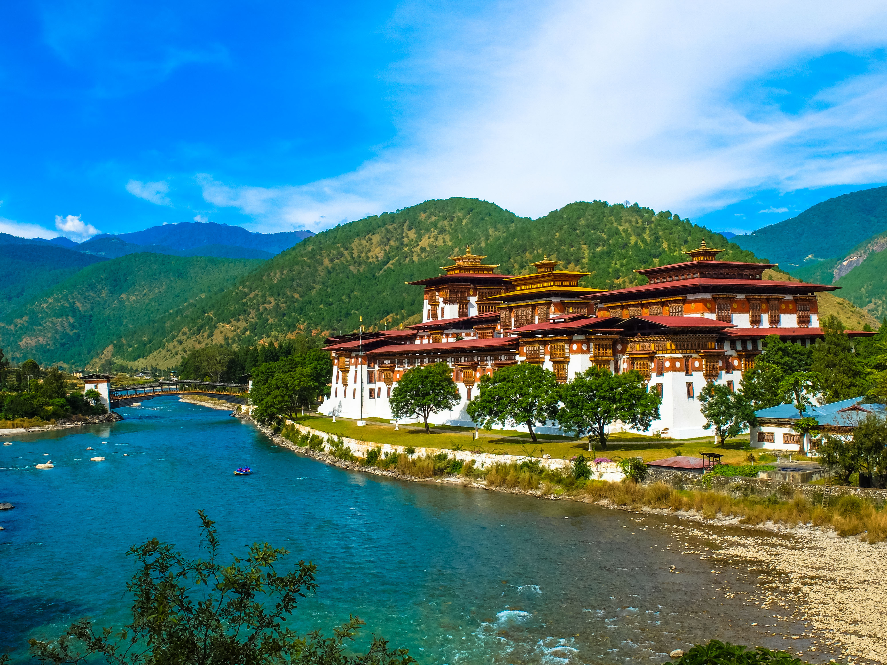

The Dzong is located between the Pho Chhu (Male) and Mo Chhu (Female) river in the Punakha–valley. The source of the Mo chu river is in the northern hills of Lighsi and Laya in Bhutan, and in Tibet. The Po Chu River is fed by glaciers in the Lunana region of the Punakha valley. After the confluence of these two rivers, the main river is known as Puna Tsang chu or Sankosh River and flows down through Wangdue Phodrang, crosses the Bhutan–India border at Kalikhola and eventually meets the Brahmaputra River.[6] In view of the healthy climate in the region, Punakha is the winter capital of Bhutan. The head of the clergy of Bhutan with his entourage of monks spend the winter in this dzong.[7] Jacaranda trees grow around the dzong, blooming with mauve flowers in the spring.
